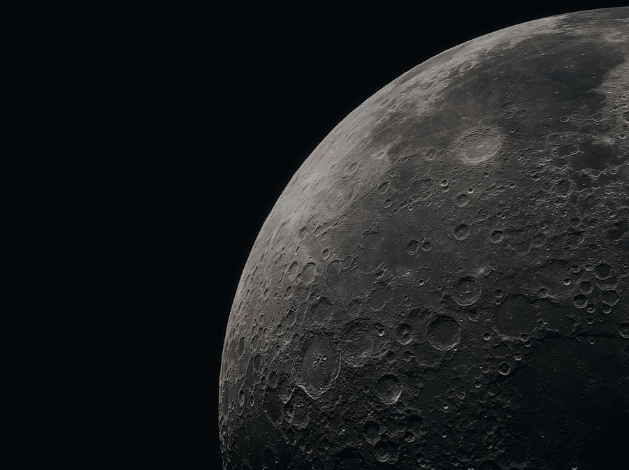

Potential Mining Targets

High Accessibility
OPEN
Near-Earth Asteroids (NEAs)
These have orbits that pass close to Earth. Due to low delta-v (velocity change) requirements, they are the most immediate targets for early mining missions.

High Volume
OPEN
The Main Belt
Located between Mars and Jupiter, this area contains the vast majority of asteroids. While harder to reach, it holds essentially unlimited mineral wealth.

Strategic Base
OPEN
The Moon
While not an asteroid, the Moon is a crucial stepping stone. Mining lunar regolith for Helium-3 and water ice is essential for processing asteroid materials.